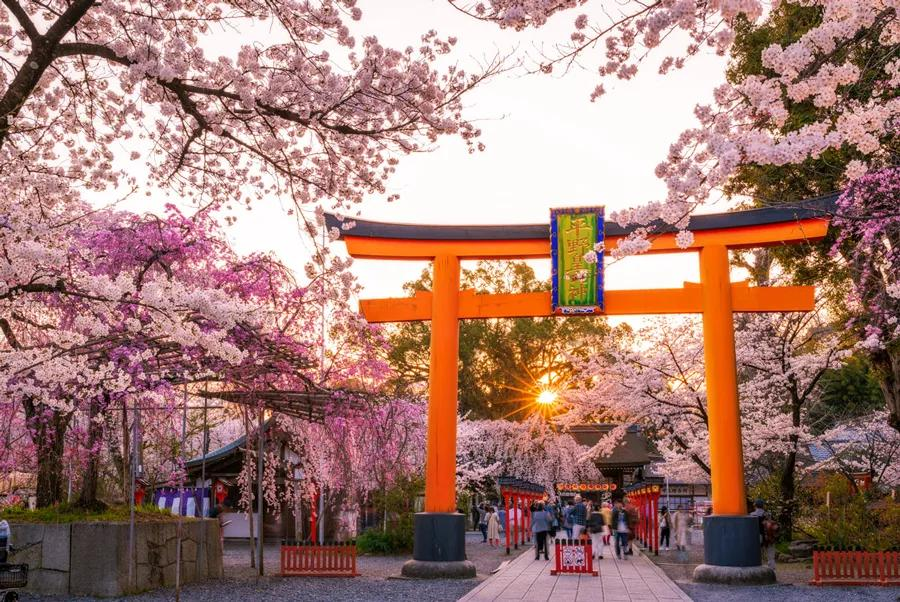

sobre o festival

Uma imersão na alma japonesa
Venha vivenciar uma experiência imersiva nos sabores, rituais e tradições que moldaram a culinária japonesa por mais de mil anos. Da cerimônia do chá ao barulho vibrante dos tambores Taiko, o festival reúne cultura viva em cada esquina.
Com mais de 50 expositores, 3 dias de programação e chefs renomados de todo o Brasil, o SCJ 2025 é o maior festival de cultura japonesa da América Latina.